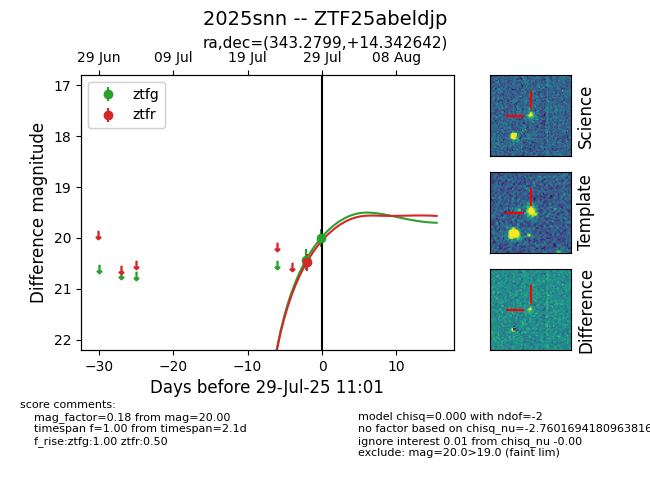

Target 2025snn at 2025-07-29 11:01, see:
FINK: fink-portal.org/2025snn
Lasair: lasair-ztf.lsst.ac.uk/objects/2025snn
ALeRCE: alerce.online/object/2025snn
TNS: wis-tns.org/object/2025snn
YSE: ziggy.ucolick.org/yse/transient_detail/2025snn
alt names
ZTF25abeldjp (ztf,fink)
2025snn (tns,yse)
coordinates:
equatorial (ra, dec) = (343.2799,+14.34264)
galactic (l, b) = (84.5904,-39.56226)
photometry
last ztfg=20.00, ztfr=20.48
2 ztfg, 1 ztfr detections
